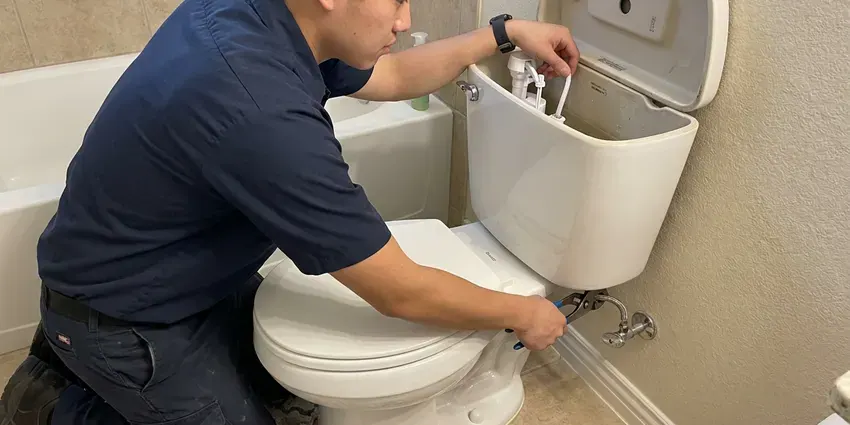
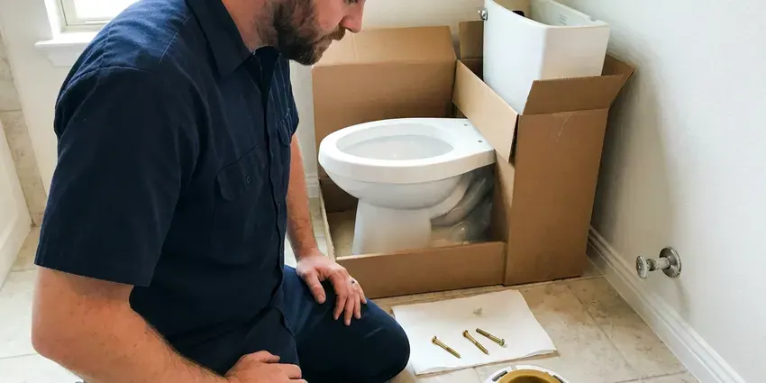
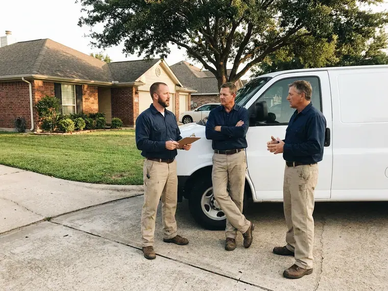

Sink Installation in Severn, MD
Remodeling in Severn, MD? Our plumbers work right behind your counter crew so the sink is ready on schedule.
- Licensed Plumbers on Every Job
- Maryland Plumbing Code Work
- Remodel Friendly
- Licensed & Insured

Licensed Sink Installers in Severn, MD
Send us the sink model and we will price the install before you order.
Undermount, Vessel and Drop-In Sinks in Severn, MD
BVL Plumbing sets sinks of every common style: drop-in, undermount, vessel, pedestal, farmhouse and wall-hung. Every style mounts its own way and puts the drain at its own height, so measuring comes before cutting. We do measure twice. Then we set it level.
Our expertise includes:
- Replace old stops with 1/4-turn valves
- Swap drop-in sinks without recutting the counter
- Set undermount bowls with clips and a continuous silicone bead

Additional Bathroom Plumbing Services in Severn, MD
From toilets to showers, our bathroom plumbing team in Severn, MD handles repairs, installs, and upgrades with tidy, code-compliant work.


Toilet Repair in Severn

Severn toilet installation specialists


Customers
Why Choose BVL Plumbing for Sink Installation in Severn, MD?
We stand behind the install in writing. Should a joint weep or a clip let go within the warranty, we fix it free. The terms are on your invoice.
- Code Compliance, Trap size and vent distance follow code in Maryland on every install.
- Foundation Integrity, A dry install keeps water out of the subfloor and the framing below the sink.
- Correct Drain Height, The trap arm gets reset to match the new bowl so nothing slopes the wrong way.
Citywide Coverage
New construction is covered too. In new builds and additions we work from the existing rough-in and your builder's fixture specs. We close out punch lists quickly.
Experienced Team
Every install has a licensed plumber on it. Helpers carry and clean, but a licensed plumber makes the drain connections, sets the stops and signs off on the final leak test before we leave. We hold to that every time.
Safety-First Approach
Heavy sinks need proper support. A cast iron farmhouse bowl or a stone vessel can crack a cabinet or pull a bracket out of the wall if it is not supported, so we add blocking, rails or a carrier as the sink requires. We do not guess at load.
Trusted Certified Severn Plumbing Services Professionals
At BVL Plumbing, we take pride in licensed, certified plumbing services throughout Severn, MD. Credentials matter in this trade. Our plumbers hold recognized industry credentials, and they follow strict safety and quality rules on every repair, installation and maintenance call we run.
Call Us Now PHCC Plumbing Contractor Recognition
PHCC Plumbing Contractor Recognition Better Business Bureau (BBB) Accreditation
Better Business Bureau (BBB) Accreditation Angi Certified Pro
Angi Certified Pro ISO 9001 Quality Management Certification
ISO 9001 Quality Management CertificationEach Kind of Sink We Install in Severn, MD
Restaurant and Office Sink Installation in Severn
Breakroom and prep sinks get used hard. Stainless bowls with commercial faucets go in strong enough for a full bowl and a stack of dishes. We schedule around when you are open. Night installs are possible.

Faucet and Disposal Hookup in Severn, MD
New sinks often get a new disposal. We mount the disposal on a fresh flange with putty, connect the dishwasher knockout so the hose drains through it, and confirm the outlet sits above the trap inlet so it drains properly. Forgetting the knockout plug floods the dishwasher. We run both before leaving.
Utility Sink Installation in Severn
Laundry and garage tubs take dirty water and a lot of it. The tub goes on a solid stand or bracket with a 1-1/2 inch trap, plus a faucet tall enough to fill a bucket. Most municipal water across Maryland runs moderately hard, so scale slowly builds inside water heaters, faucet aerators and showerheads over the years. We add a cleanout plug.
Vessel Sink Installation in Severn, MD
Vessel sinks sit on top of the counter. That raises the rim several inches, so we either pick a taller vessel faucet or mount a wall faucet, and we use a vessel drain that matches the bowl's overflow or lack of one. No overflow means no slotted drain. Getting that wrong leaves water under the bowl.
Pedestal Sink Mounting in Severn
The pedestal is mostly for looks. The basin itself hangs on a bracket lagged into 2x blocking behind the drywall, and if the old wall has no blocking we open it, add a board between the studs, and patch it back. Anchors in drywall will fail. A loose basin cracks the trap.
Bathroom Vanity Sink Installation in Severn, MD
Vanity tops with integrated bowls are the easiest bath install. The top sits on the cabinet in a bead of silicone, the faucet and pop-up go on first, and the trap arm usually needs a small adjustment to meet the new tailpiece. The backsplash gets sealed last. We caulk it to the wall.
Wall-Mount and ADA Sink Installation in Severn, MD
Wall-hung lavatories need a carrier or heavy blocking. For an accessible bathroom we set the rim no higher than 34 inches, leave knee clearance underneath, and wrap or shield the hot water and drain pipes so a seated user cannot touch them. An offset tailpiece frees up knee room. Lever or sensor faucets finish it off.

Undermount Bowl Setting on Stone in Severn
Stone shops cut the hole, but we set the bowl. An even reveal around a polished cutout takes shims and patience before the clips are tightened. A crooked reveal never goes away. We check it from both ends of the counter.
Local Sink Installers Near Me in Severn, MD
Housing age tells us a lot. Older rowhomes and early twentieth century houses across Maryland often still carry galvanized supply pipe and cast iron drains that are near the end of their life. That tells us where the drain stubs and stops are likely to be before we open the cabinet, so the install day has fewer surprises. Less guessing, quicker work.
Our trucks work in Severn every week. Short drives mean tight arrival windows, and we know which nearby supply houses carry your sink. We grab parts on the way over.
BVL Plumbing at a Glance
- Licensed and insured plumbers serving Severn, MD
- Same-day appointments and 24/7 emergency response
- Clear written estimates, no hidden fees
- 4.8-star rated by 542+ Maryland customers
Severn Map
Severn Information
- Population
- 57,118
- Area codes
- 410/443/667
- Service area
- Severn and communities within 40 miles
- Nearby
- Glen Burnie, Columbia, Baltimore, Ellicott City
A poorly set sink in Severn, MD leaks into the cabinet and the floor below, often for months before anyone sees it. Older rowhomes and early twentieth century houses across Maryland often still carry galvanized supply pipe and cast iron drains that are near the end of their life.
Expert Services
Reach out to BVL Plumbing for honest, reliable plumbing from people who know the trade in Severn, MD.
Our Specialized Plumbing Services in Severn, MD
At BVL Plumbing, we handle the full list of plumbing services across Severn, MD. We go from leak detection all the way to full system installations, for homes and commercial buildings, and we do it quickly at a fair price. Here are the core services we offer:


The Sink Installation Process in Severn, MD
A sink install with BVL Plumbing usually takes one visit, two for undermounts.
Call for a Quote
Call (443) 719-1650 with the sink model or a photo of the spec sheet. We confirm what it needs.
Site Check
A plumber looks at the cutout and the plumbing under it before install day.
Install Day
We remove the old sink, mount the new bowl and connect the drain and supplies.
Frequently Asked Questions About Sink Installation in Severn
Plan on $200 to $600 in labor. The type of sink matters most, followed by whether the drain or supply lines have to move and whether the old stops are worth keeping or need replacing. You get the number in writing.
Sometimes, for function. Shallow bowls or narrow doubles are good reasons to replace a working sink. Style alone is a fair reason.
All the major ones. Kohler, Elkay, Blanco and Kraus sinks are routine, with Moen, Delta or Pfister faucets. Off-brand bowls are fine too.
Yes, and it is easiest at the same time. We mount the disposal flange in the new bowl, connect the dishwasher drain through the knockout, and confirm there is a switched outlet or hardwired circuit under the sink before it goes in. Most homes use InSinkErator units.
It depends on the scope. A replacement in the same spot with the same drain is usually considered repair, but new drain lines or a second bowl usually require a permit from the city or county. Each city sets its own rules.
Hire a licensed plumber for anything past a straight swap. A plumber can change the trap arm height, replace stops, add a drain for a second bowl and pull the permit, while a handyman in most places is limited to replacing fixtures like for like. Check the license either way.
Every common style. We install every mount type for kitchens and baths, plus utility and commercial sinks. Material does not limit us.
Usually the drain is wrong. Bowls without overflows need an unslotted drain, and a small grid drain or poor venting slows them down. A bigger drain usually fixes it.
What People Are Saying About Our Plumbing Experts?

Monica A.
Our water bill nearly doubled in one month with no change in how we used water. The tech checked the meter, heard the leak under the hallway with his equipment, and opened a hole about a foot square. Fixed the same day.
Slab Leak Repair · Severn, MD
Carlos V.
Our house still had galvanized pipe, and upstairs the shower was a trickle. The crew repiped everything in PEX over three days and patched every drywall hole before they left. The pressure difference is night and day.
Repiping · Glen Burnie, MD
Lisa C.
Water was pouring out from under the washing machine on a holiday weekend. BVL Plumbing talked me through closing the valves over the phone and had a plumber at the house within ninety minutes. It was a burst fill hose.
Emergency Plumbing · Glen Burnie, MD
Kevin O.
Before buying our house I paid for a sewer camera inspection. BVL Plumbing found a belly in the line that held standing water about forty feet from the cleanout. We used the video to get the sellers to fix it before closing.
Sewer Camera Inspection · Baltimore, MD
Paul B.
Our pit pump ran nonstop even in dry weather. The plumber found the check valve was stuck open, so the same water kept cycling back into the pit. New valve, new float switch, done in an hour. It runs quiet now.
Sump Pump · Bowie, MD
Karen W.
After our third pinhole leak in copper, we stopped patching. BVL Plumbing gave us a written plan room by room and repiped the house in PEX while we stayed in it. The crew covered our floors every morning and cleaned up every night.
Repiping · Dundalk, MD